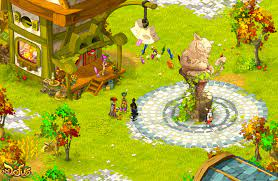

Brève Présentation
La société Ankama games est la filiale du groupe Ankama, dédiée à la création le dévellopement, la modération et la mise a jour de jeux vidéo. La filliale voit le jour en 2006 mais Ankama développait déja des jeux avants de créer Ankama Games, nottament leur jeu le plus connu, Dofus qui est un MMORPG(1) mis en ligne pour la première fois en 2004 est qui est toujours fonctionnel a l’heure actuel et posséde plus de 1,5 millions de joueurs inscrits.
*¹ MMO=Jeu en ligne massivement multijoueur

Ankama Et Le Transmédia
Ankama pratique le “transmédia” c’est a dire que la plupart des oeuvres produites par Ankama se passent dans le même univers, et on peut y retrouver les mêmes personnages peut importe le support de l’oeuvre. Ainsi si l’un des départements d’Ankama produit une oeuvre qui rencontre du succés, cela impactera les autres département. Par exemple, après la première diffusion de la série animée Wakfu en 2008, qui rencontre un succés critique ainsi que commercial, beaucoup d’amateurs de cette série se mettent a jouer à Dofus afin de pouvoir voir sous un autre jour l’univers et les personnages qu’ils aiment tant.Ainsi la diffusion de Wakfu fait passer le nombre de connections moyennes de 7000 par jours jusqu’a 14000, ou elle stagne encore aujourd’hui
Le Paradigme du jeu service
Les jeux principaux d'Ankama Games sont des jeux massivement multijoueurs, et appliquent donc le paradigme du “jeu service” ainsi, au lieu de vendre leur jeu une seule fois et de n’obtenir qu’un seul paiment, Ankama vends l’acces aux serveurs et la mise en relations avec les autres personnes sur ce serveur et demande donc un abonnement. Cela permet donc un revenu plus stable que normalement, mais demande d’être très réactif au problèmes que peuvent rencontrer le serveur , être très a l’écoute de sa communauté et entretenir des serveurs. Ainsi la société Ankama Games évite la précarité qui peut exister dans le monde du jeu vidéo, où un studio doit vivre de l’argent de son dernier jeu tout en produisant le suivant, un échec commercial d’un jeu veut dire une repercussion immédiate sur ses employés.Ankama propose donc une alternative, toutefois, cela veut dire que les employés ont souvent des conditions de travail difficile, où ils doivent être au aguets de tout problémes, même au milieu de la nuit, pour pouvoir gérer des problémes pour les joueurs étrangers nottament, et peuvent être appelé en urgence pour réparer un problème de serveur. De plus comme on peut le voir sur le graphique ci dessous, le nombre d’importantes mises à jour du jeu à diminuer résultant de la volonté d’ankama de plus préparer ses mises à jours, de créer du contenu plus qualitatif au en baissant la quantité, et de permettre aux employés d’avoir une quantité de travail plus résonnable